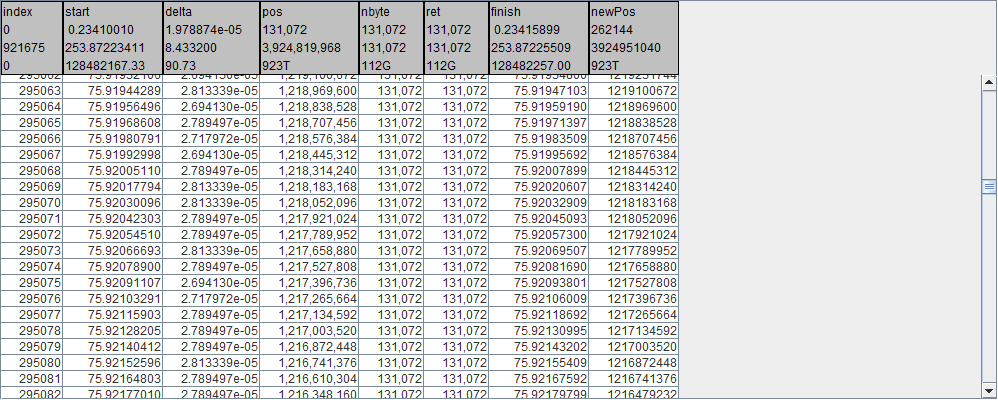
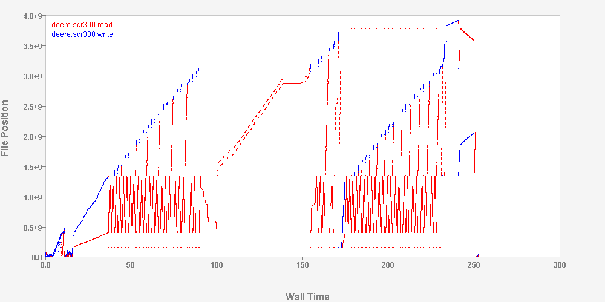

What is iot?
iot is a Linux application program that inserts the I/O toolkit middleware into the environment of all child processes of iot. iot has several options that allow for customizable instrumentation.
Wild card name selection of programs and files affected by iot middleware
Each child of iot generates its own ilz stream
Optional merging of all generated ilz streams into a single stream
Collection of kernel instrumentation such as diskstats, netstats, meminfo, and cpustat
Optional delay of iot intervention in programs until MPI_Initialized() returns true.
Benefits
- No root permission needed
- No recompiling or relinking
- Minimal changes to run scripts
- Compatible with MPI
- Low overhead
Examples
iot command is a pre-command, such as time:
% iot -f dd.icf dd if=/dev/zero of=/dev/null count=1024 bs=1m
iot arguments
-f <icf_file_name>
-c <file> collect all iol results in file
-m delay iot interception until MPI_Initialized() returns true
Processes downstream of the iot process are selectable for instrumentation, based on the pathname of the program being executed, by directives in an iot configuration file (icf):
PROGRAMS.include={*.exe:a.out}.exclude={sh:csh}
icf example
ilz.name={${PROGRAM}.${PID}}.directory={${HOME}/ilz}
diskstats.interval={500}.devices={sd*}
meminfo.interval={500}
PROGRAMS.include={*.exe}.exclude{/bin/*}
FILES.include={/tmp/**}
LAYERS.use={trc,psx}
What is Pulse?
Pulse is a Java graphical application that imports ilz streams and allows the user to view and manipulate the imported data. Pulse has several features that facilitate the analysis of data:
- Built in compiler/linker allowing customizable expressions, functions and macros for data manipulation and plotting
- Support of numerous data types: int, long, float, double, string, and boolean
- A built in library of plotting functions allowing access to Java's plotting capabilities
- Tabular data with row counts limited only by the amount of stack memory available to the JRE ( Java Runtime Environment ).
NOTE: The largest ilz stream processed by Pulse consisted of 2 tables of 28.6M posix reads and writes, requiring only 2.3GB of memory by the JRE
How are Instrumentation Streams used?
File I/O instrumentation for each program is selectable on a per-file basis, based on each file's pathname, by directives in an icf file:
FILES.include={*.dat:/tmp/**}.exclude={/scratch/**}
LAYERS.use={trc,psx}
Resulting instrumentation is recorded in an ilz file.
ilz streams are:
- Stored in a file for post-mortem analysis
- Delivered via socket for run-time analysis
- zlib compressed to minimize sizes
- Multiple ilz streams can be concurrently merged into a single ilz stream
There are 3 levels of file I/O instrumentation
Statistics, for each selected file, are summed into a one line summary for the process
trc.detail=0 produces the following for every program
# date time host user pid program bucket openCount closeCount write(count,bytes,wait) read count,bytes,wait)
03/12/15 12:31:26 shemp bauerj 30168 cc1 program_to_psx 192 192 113 547 0.00 191 1219977 0.00
Statistics, for each selected file, are output to the ilz file.
trc.detail=1 produces the following for every file
iosim.exe.21016.ilz trc program_to_cache /mnt/raid0/bauerj/iosim/20992/merged/kubota.SCR300 58224 7630618624 8.43
iosim.exe.21016.ilz trc size(open,close,max)=0,0,460980224 fsType=EXT2 sector=8192
iosim.exe.21016.ilz trc write 8818 1155792896 1.50
iosim.exe.21016.ilz trc read 49399 6474825728 4.15
iosim.exe.21016.ilz trc ftunc 5 948043776 2.79
Blow-by-blow details of each I/O event, for each selected file, are logged in the ilz file.
trc.detail=2 provides tables such as the following for each posix I/O event for each file, in addition to the per-file summary information from trc.detail=1
POSIX
For example, the details for a POSIX read are: 
Visualized in Pulse 